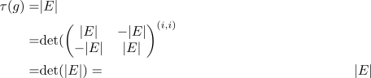
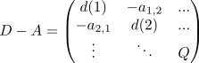
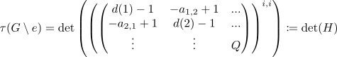
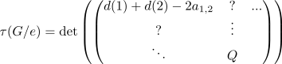
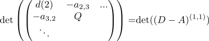

Matrix Tree theorem
Proposition
Let $G = (V,E)$ be a undirected multigraph with $\vert V \vert \geq 2$. Then the amount of Spanning Trees is given by
where we delete the \(i\)-th row and \(i\)-th column
see also:
Proof
Proof by induction for $\vert E \vert$
induction basis
a)
for $\vert E \vert = 0$. Then $\tau(G) = 0 = \mathrm{det}(D - A)^{(i,i)}$ since $D = A = 0$ are the zero matrices
b)
Assume $\vert E \vert \geq 1$ and $v(G) = 2$ Then there exists a bijection between spanning trees and edges, i.e.
thus we get

Now assume that $\vert V \vert \geq 3$
choose any edge $e \in E$. Then by amount of spanning trees for a multigraph we get
$i$ isolated
Suppose $i$ is isolated vertex, i.e. $d_G(i) = 0$. Then $\tau(G) = 0$ since $G$ is not connected.
Then $(D_G - A_G)^{(i,i)}$ is the matrix $D_{G'} - A_{G'}$ corresponding to $G' = (V \setminus \{i\})$. But by <> the matrix $D_{G'} - A_{G'}$ is not injective, hence the determinant is given by $0$
$i$ not isolated
Now assume that $e = \{i,j, m\}. w.l.o.g. (after possibly applying a permutation to the vertices, which does not change graph theoretic properties of the graph) assume that $i = 1, j = 2$
Then

where $Q$ is given by deleting the $(1,1),(2,2)$
Then

where only the 2x2 square on the top left got changed.
Then applying the Laplace-Experiment shows
where
Furthermore

where by induction assumption we get
thus
Now consider the matrix
\begin{align*}
\left(\begin{pNiceMatrix}
d(2) & -a_{2,3} & ... \\
- a_{3,2} & Q & \\
\ddots & &
\end{pNiceMatrix} \right)
\end{align*}